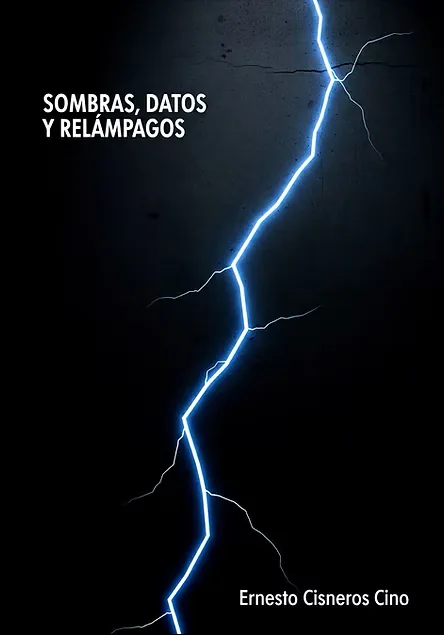
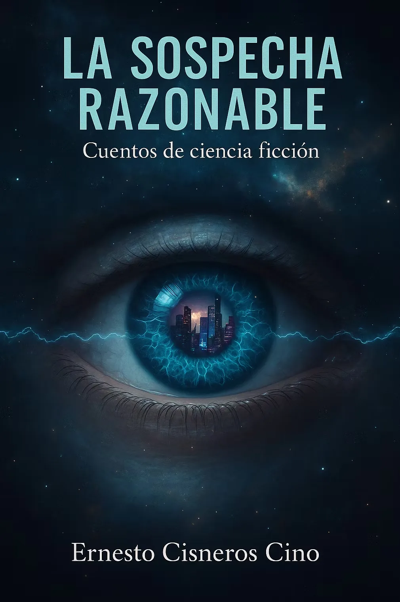
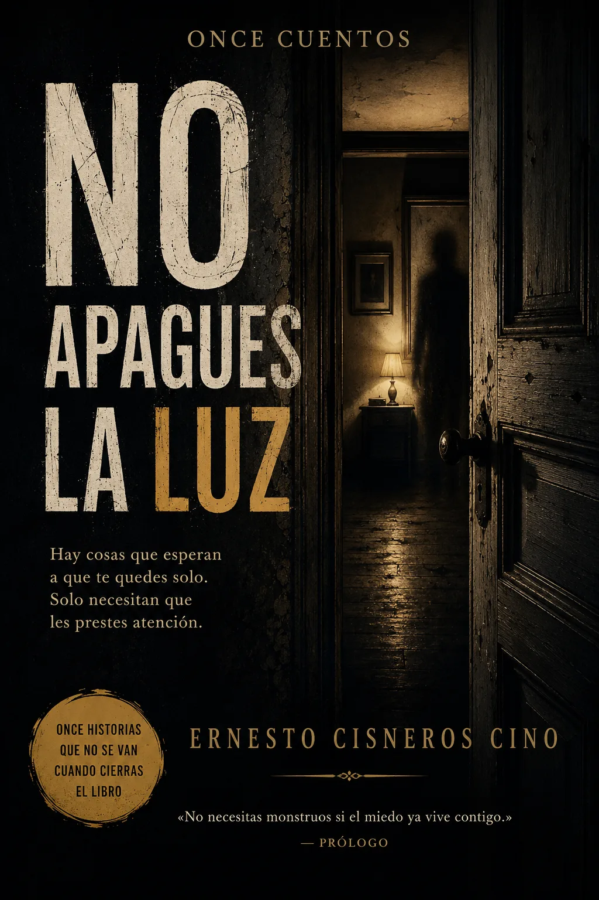
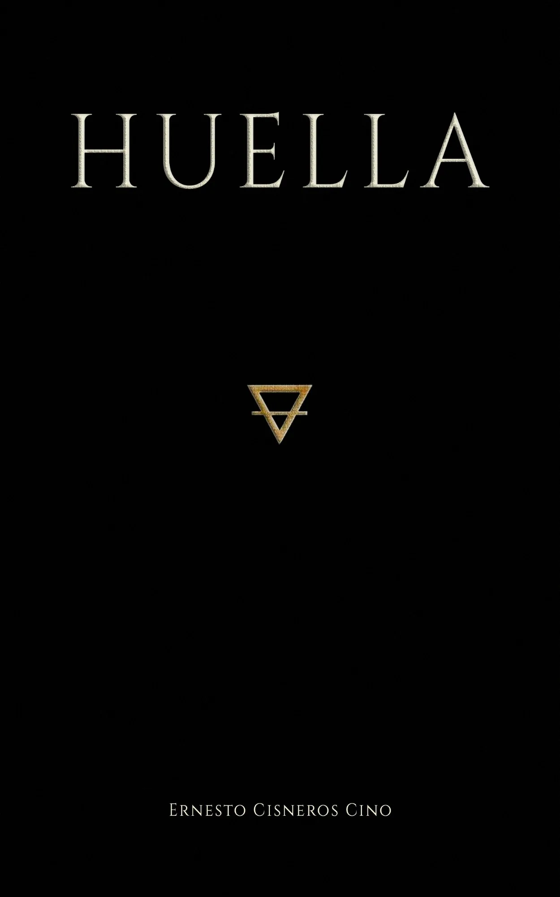
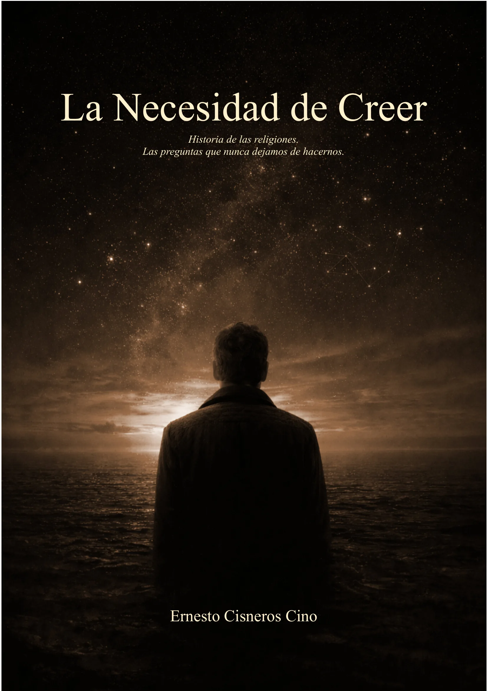
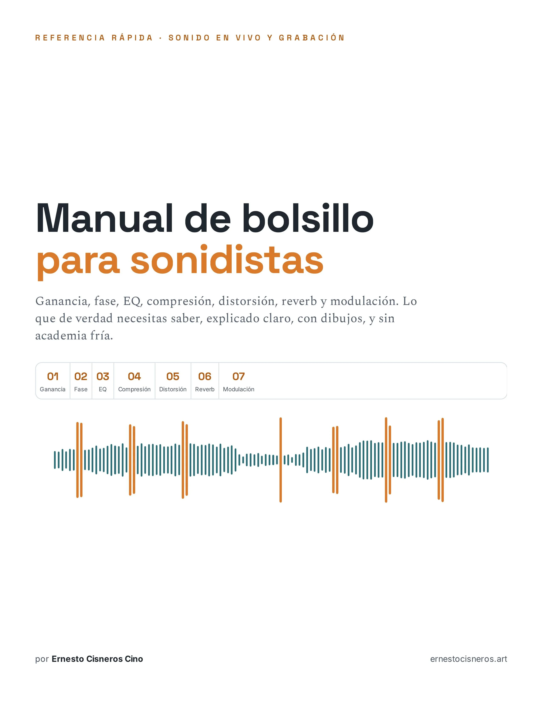

도서
제 작업은 음악에 뿌리를 두고 있지만, 글쓰기는 저를 움직이는 질문, 감정, 아이디어를 탐구하는 또 다른 방법이 되었습니다.
어떤 이야기는 침묵을 요구하고, 어떤 것은 소리를 요구하며, 몇몇은 반드시 단어가 되어야 한다고 주장합니다.
이 책들은 제 창작 세계의 확장으로, 음악, 기억, 성찰이 다른 형태를 취하는 공간입니다.

La Sospecha Razonable

No apagues la luz

Huella

La Necesidad de Creer

Manual de bolsillo para sonidistas
후기
글쓰기는 계획된 길이 아니었다. 그것은 내가 창조하는 모든 것의 자연스러운 연장이 되었다. 음악, 시각 예술, 영상, 문학은 같은 질문을 탐구하기 위한 서로 다른 형식에 불과하다.
이 책들은 계속해 나갈 여정의 시작을 보여준다.
나는 앞으로도 쓸 것이다(때로는 스페인어로, 때로는 영어로). 내 작품이 이제 글로벌 커뮤니티에 말을 걸고 있기 때문이다. 다양하고 국경 없는 NFT 세계는 이 충동의 결정적 일부이며, 대화, 협업, 그리고 새로운 예술적 영역으로의 문을 열어주었다.
아직 이야기되지 않은 이야기가 있고, 탐구해야 할 질문이 있으며, 그것들이 나타날 수 있는 언어가 있다.
읽어주시고, 귀 기울여주시고, 이 창조적 우주가 계속 확장되는 동안 가까이 있어주셔서 감사합니다.